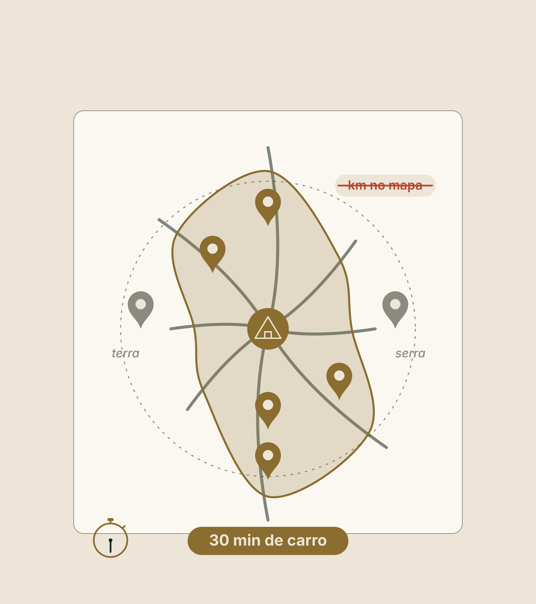
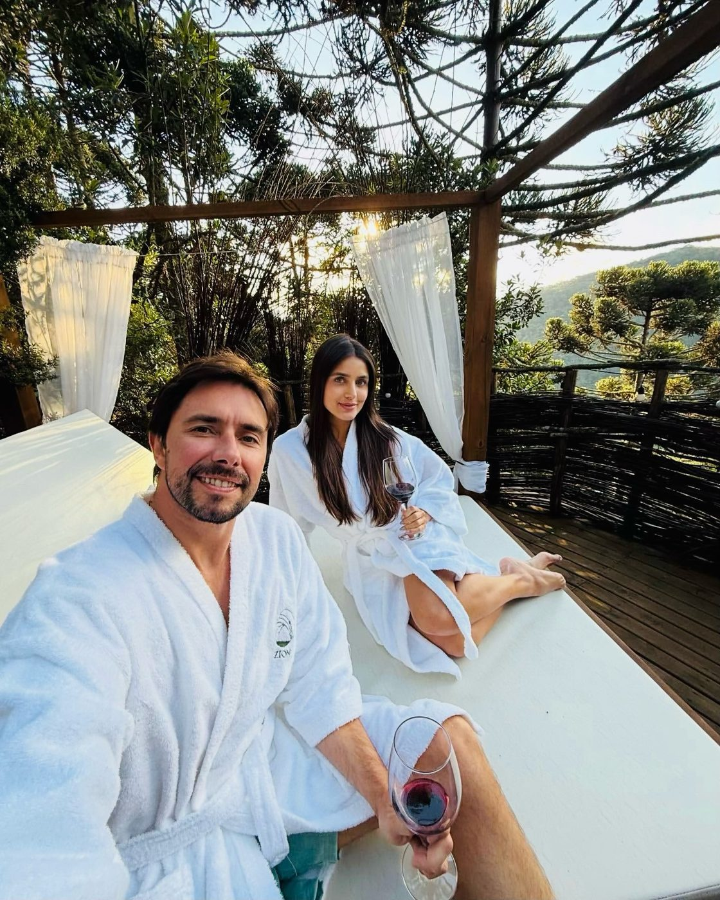

Método Zion · Etapa 1 · Ler o lugar
Pilar 2
Mercado e demanda
Quem paga, quanto, em que época e para quantas unidades. Você troca o "aqui enche oitenta por cento" por um número com fonte, e sai com a Ficha do Mercado: a página 2 do seu Dossiê.
O que você vai fazer aqui
Assistir, responder e sair com a sua Ficha
Assistir
Dois vídeos curtos, um por bloco. Eles aparecem aqui dentro, no ponto certo.
Responder
Uma pergunta por tela, logo depois do trecho que a explica. Cada resposta fica salva na hora, neste aparelho.
Sair com a Ficha
No fim, a ferramenta da Ficha abre aqui mesmo, já com as suas respostas. Você gera o resultado e baixa a página 2 do Dossiê em PDF.
DicaTenha o celular, o Airbnb e o Booking abertos, papel e caneta. Use os botões lá embaixo, ou as setas do teclado, para avançar.
Antes de começar · o Pilar 1 de cabeça · 1 de 3
Dos quatro limites que decidem quantas unidades cabem, um ficou em aberto no Pilar 1. Qual?
O limite de mercado: quantas unidades o destino compra. É ele que você mede hoje. E quem manda é sempre o menor dos quatro.
Antes de começar · o Pilar 1 de cabeça · 2 de 3
O hóspede decide a viagem pela distância no mapa ou pelo tempo de caminho?
Pelo tempo. No Pilar 1 você ligou o cronômetro na chegada. Hoje, o raio dos comparáveis também é medido em tempo: até trinta minutos de carro.
Antes de começar · o Pilar 1 de cabeça · 3 de 3
A matrícula da Marina tem 50.000 m². Quanto disso virou negócio, depois das subtrações?
Só 30%. Quem negocia pela área do papel paga pelo metro que nunca vai usar. Hoje o erro parecido é outro: contar anúncios em vez de unidades.
Vídeo 1 de 2 · Bloco 1 · Os comparáveis, a diária e a ocupação
Um checklist, não uma história
Seis paradas, quatro perguntas em cada
- Como ler o checklist
- Os comparáveis, quem vende o mesmo que você
- A diária e a ocupação, quanto a região paga e quanto enche
- A curva do ano, em que época ela vende
- Quem paga, o hóspede e o motivo da viagem
- Quantas unidades o destino compra
O que olhar
Por que importa
Como verificar
Sinal vermelho
O que manda parar e investigar.
Quem constrói pelo que acha descobre o mercado depois da obra. Onde não souber, "não sei": vira uma tarefa com nome.
Parada 2 · Os comparáveis
Não é o vizinho. É quem o seu hóspede escolheria no seu lugar.
Comparável é quem vende o mesmo motivo de viagem que você, na mesma faixa de preço. Passe cada anúncio por quatro filtros:
- Mesmo porte
- Mesma proposta
- Mesmo motivo de viagem
- Mesma faixa de preço
Sinal vermelhoComparar cinco cabanas com um hotel de cem quartos.

Quiz relâmpago · clique numa resposta
Você vai ter cinco cabanas. Um hotel de cem quartos, na mesma estrada, entra na sua lista de comparáveis?
Comparar cinco cabanas com um hotel de cem quartos é o sinal vermelho dos comparáveis. Comparável não é o vizinho: é quem passa nos quatro filtros.
E o raio da busca
Até trinta minutos de carro
Quem fica a até trinta minutos de carro do seu terreno.
O hóspede pensa em tempo, não em distância.

A busca
De 30% abaixo a 30% acima do que você imagina cobrar
Anúncio
É a página de cada hospedagem numa plataforma, como o Airbnb ou o Booking.
A faixa
O preço mais baixo que você imagina vezes 0,7. O mais alto vezes 1,3.
Mais de uma plataforma
Cada uma mostra um conjunto diferente. Busque em mais de uma.
Depois, monte a lista
De dez a vinte comparáveis, sem repetidos, e some as unidades
- Tire quem aparece nas duas plataformas.
- Tire quem não passa nos quatro filtros.
- Some as unidades. Unidade é cada cabana, chalé ou quarto.
Uma pousada de oito quartos
É um anúncio e oito unidades.
Sinal vermelhoContar anúncios em vez de unidades.
A tarde da Marina
De cada comparável, anote
Sete itens, numa folha só
Nome e link
As unidades
A diária de semana
A de fim de semana
Separadas.
Quantas avaliações
A data da primeira
A promessa em uma frase
O que ele diz que entrega.
NuncaNunca copie nome ou dado de hóspede.
Se ninguém hospeda na sua região
Descubra por quê antes de comemorar
Ausência de concorrente
Pode ser ausência de procura.
Converse com dois ou três donos
De comparáveis. Pergunte o que custou chegar até a porta aberta, não quanto faturam.
Quiz relâmpago · clique numa resposta
Na sua lista entrou uma pousada de oito quartos. Como ela entra na conta?
Um anúncio e oito unidades. Contar anúncios em vez de unidades é sinal vermelho: o mercado parece menor do que é.
Parada 3 · A diária e a ocupação
A diária não se escolhe. Se descobre.
Ocupação
É a parte das noites que foi vendida. Diária é o preço de uma noite.
Do dia 30 ao dia 90
Leia no calendário de cada anúncio as noites bloqueadas, contando de hoje. Longe das reservas de última hora.
Sexta e sábado à parte
Separe de domingo a quinta. Uma ocupação só esconde o meio de semana vazio, que é onde mora a oportunidade.
Na hora da média
Cada comparável pesa pelas unidades que tem

Quiz relâmpago · clique numa resposta
Dois comparáveis: um com uma cabana a 100%, outro com dez cabanas a 20%. Qual é a ocupação que entra na sua conta?
Cada comparável pesa pelas unidades que tem. A média dos anúncios dá 60%. A conta das onze cabanas dá 27%.
Para o preço
Use a mediana: o preço do meio
- Ponha os preços em fila e pegue o do meio.
- Uma mediana para o fim de semana, e outra para domingo a quinta.
Sinal vermelhoEscolher o preço pelo que você precisa, e não pelo que o hóspede paga.
A diária média: o que entrou ÷ as noites vendidas
| Nos comparáveis da Marina | Ocupação | Diária |
|---|---|---|
| Sexta e sábado | 78% | R$ 700 |
| Domingo a quinta | 26% | R$ 580 |
Noites vendidas na semana
2,86
O que entra na semana
R$ 1.846
Ocupação
40,9%
Diária média
R$ 645
Não é a soma de dois preços dividida por dois.
Mexa você · a conta da semana
Começa no exemplo da MarinaA diária média de verdade
Quiz relâmpago · clique numa resposta
Como se calcula a diária média?
Diária média é o que entrou dividido pelas noites vendidas. O fim de semana vende mais noites e pesa mais na conta.
A amplitude
O seu destino paga pela diferença?
A diária mais cara do seu raio dividida pela mais barata, no fim de semana.
Leia o que os três mais caros entregam e os três mais baratos não. Costuma ser uma lista curta.
AvisoPreço alto com calendário vazio não é exemplo: é aviso.

Antes do bloco dois · a sua tarde de pesquisa
O que você já mediu
De dez a vinte comparáveis, com as unidades, a diária de sexta e sábado, a de domingo a quinta e as noites vendidas do dia 30 ao 90. Onde aparece "não sei", é tarefa da semana.
Vídeo 2 de 2 · Bloco 2 · A curva do ano, quem paga e quantas cabem
Parada 4 · A curva do ano
A temporada que todo mundo repete é opinião. A curva do ano é dado.
Sazonalidade
É como a procura muda ao longo do ano.
Conte os meses
Quantos meses de alta, médios e fracos a região tem, e a ocupação de cada grupo. Peça a série de visitantes à secretaria de turismo.
A média pelos doze meses
Os meses de cada grupo vezes a ocupação, somados e divididos por doze.
A curva da Marina
| Grupo | Meses | Ocupação |
|---|---|---|
| Alta | 3 | 64% |
| Médios | 4 | 40% |
| Fracos | 5 | 22% |
| No ano, pelos doze meses | 38,5% |
A média simples das três estações daria 42%, e erraria para cima.
Mexa você · a curva do ano
Começa no exemplo da MarinaConfira na régua
Quanto um lugar costuma encher no ano
Passou de sessenta e cinco sem prova de procura extraordinária, pare e pergunte: que prova eu tenho?
É régua para conferir, não promessa.
Quiz relâmpago · clique numa resposta
A sua conta deu 72% de ocupação no ano, e você não tem prova de procura extraordinária. O que fazer?
Passou de 65% sem prova de procura extraordinária, pare e pergunte que prova você tem. E na conta do ano entra a média do ano, nunca o mês mais cheio.
Receita bruta, o mês cheio e o mês fraco
Na conta do ano, a média do ano. Nunca o mês mais cheio.
Receita bruta
É tudo o que entra, antes de imposto, comissão ou custo.
Olhe o mês fraco
Quanto entra por unidade. Se o custo de manter aberto passar disso, falta caixa.
Mês fraco pede produto
Não desconto.
Quiz relâmpago · clique numa resposta
O mês fraco está vazio. O que ele pede?
Mês fraco pede produto, não desconto.
Parada 5 · Quem paga
"Casais e famílias" não é público. É meio Brasil.
- Público é quem vem, por qual motivo, de onde e por quantas noites.
- O motivo da viagem decide o que a pessoa compra: descansar, comemorar, trabalhar, explorar.
- Leia vinte avaliações recentes de cinco comparáveis, cem no total, e marque quem veio: casal, família, amigos, alguém sozinho ou a trabalho.

Cem avaliações. Sessenta e oito de casais.
"a casa só para nós"
- A frase apareceu onze vezes. É o motivo da viagem falando.
- Quem vem de até duas horas decide em cima da hora e fica no fim de semana.
Sinal vermelhoDepender de uma cidade só.
Então decida
Dois públicos, e quem fica de fora
Fim de semana
Um público de fim de semana.
Meio de semana
E um de meio de semana.
Quem fica de fora
Escreva quem você não vai atender.
Essa é a base do produto, no Pilar 3.
Parada 6 · A absorção
Não é quantas você quer. É quantas o destino compra.
Absorção é quantas unidades novas o destino consegue encher sem tirar hóspede de ninguém.
As noites que já têm dono
As que os comparáveis já vendem.
Quanto a procura cresce
Até você abrir, pela série da secretaria de turismo. Sem série, "não sei": a ferramenta conta zero.
O que está em obra
As unidades em obra ou em licença. Peça os alvarás na prefeitura: elas abrem antes de você.
As noites que sobram
Cabem três. Ela desenha a infraestrutura para cinco e abre com três.
Mexa você · quantas o destino compra
Com as suas respostasOnde você ainda não respondeu, a barra começa num valor neutro, que não é da Marina. As barras são para testar: o que vai para a Ficha são as suas respostas.
Quiz relâmpago · clique numa resposta
Sobram 499 noites no destino da Marina, e cada cabana precisa de cerca de 139. O que ela faz?
Cabem três. Ela desenha a infraestrutura para cinco e abre com três. É o veredito mais comum: ajustar.
Feche com uma palavra
Avançar, testar, ajustar ou pausar
Avançar
Testar
Ajustar
O mais comum.
Pausar
E escreva antes o critério para parar: o fato que mudaria a sua decisão.
O checklist do mercado, em cinco frases
O que fica deste pilar
7 diasLeia o calendário de cinco comparáveis, do dia 30 ao 90, com sexta e sábado separados, e faça a conta da semana. Se já fez, peça a série de visitantes e os alvarás.
Para a Ficha sair com o seu nome
Quem é você e onde fica o terreno
Fica salvo neste aparelho. Se você já preencheu no Pilar 1, os dados vêm de lá. Nada é enviado nesta aula: a ferramenta da Ficha usa o seu e-mail só quando você pedir o mentor de IA ou baixar o PDF.
As suas respostas já estão aqui. Confira, gere o resultado e baixe a página 2 do seu Dossiê. No fim, envie para o Land Bank da Zion.
Próximo · Pilar 3
Produto e tipologias
O que você vende, e para quem: o nicho, o que o hóspede vive, a promessa e a unidade. Tudo isso vira a sua Ficha do Produto, a página 3 do Dossiê. Só siga com a Ficha do Mercado na mão.
LembreteSalve o PDF na pasta Meu Dossiê.
Conteúdo educacional. A Marina é um exemplo ilustrativo e as contas são ilustrativas. A régua de ocupação serve para conferir a conta, não é promessa. Alvarás e licenças: quem confirma é a prefeitura. Não é avaliação de mercado nem oferta de investimento, e não é promessa de renda, retorno, ocupação, crédito, compra ou sociedade. A Zion avalia cada caso.